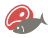
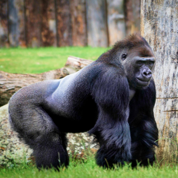
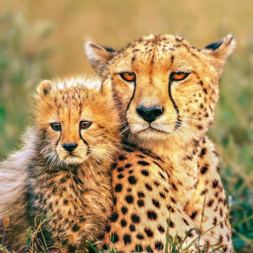

The Backstage of the Wilderness World.
The site was founded on the basis of a volunteer movement to protect and
care for animals.
How it works
The main goal is to help the animals, as well as the nature reserves and
zoos where they are kept.
We are currently working on video projects targeting pandas in China, eagles on an island near Los
Angeles, alligators in Florida and gorillas in the Congo. These have a total of more than 1,500
mammals and reptiles.


giant Pandas
Native to Southwest China

Eagles
Native to South America


Gorillas
Native to Congo

Two-toed Sloth
Mesoamerica, South America

cheetahs
Native to Africa

Penguins
Native to Antarctica

Pick and feed a friend
We know the animals bring you joy, and in these extraordinary times, we’re
glad.
During a time when the COVID-19 epidemic is touching all of our lives, we’re
proud and glad that people around the world find joy in PetStory.
Even though the zoo has reopened, we need you now more than ever to help us
deal with these problems. Please consider a gift to our Emergency
Support Fund .
How it works
Pay with card
Payment goes to the zoo
Your favourite animal gets delicious dish
Testimonials
Michael John
Local Austria
Today
The best online zoo I’ve met. My son delighted very much ljves to watch gouillas. Online zoo is
one
jf the ways to instill a love for animals.The best online zoo I’ve met. My son delighted very
much
ljves to watch gouillas. Online zoo is one jf the ways to instill a love for animals.
The best online zoo I’ve met. My son delighted very much ljves to watch gouillas. Online zoo is one jf the ways to instill a love for animals.The best online zoo I’ve met. My son delighted very much ljves to watch gouillas. Online zoo is one jf the ways to instill a love for
The best online zoo I’ve met. My son delighted very much ljves to watch gouillas. Online zoo is one jf the ways to instill a love for animals.The best online zoo I’ve met. My son delighted very much ljves to watch gouillas. Online zoo is one jf the ways to instill a love for
Oskar Samborsky
Local Austria
Yesterday
Online zoo is one jf the ways to instill a love for animals.The best online zoo I’ve met. My son
delighted very much ljves to watch gouillas. Online zoo is one jf the ways to instill a love for
animals.The best online zoo I’ve met. My son delighted very much ljves to watch gouillas.
The best online zoo I’ve met. My son delighted very much ljves to watch gouillas. Online zoo is
one
jf the ways to instill a love for animals.The best online zoo I’ve met. My son delighted very
much
ljves to watch gouillas. Online zoo is one jf the ways to instill a love for animals.
The best online zoo I’ve met. My son delighted very much ljves to watch gouillas. Online zoo is one jf the ways to instill a love for animals.The best online zoo I’ve met. My son delighted very much ljves to watch gouillas. Online zoo is one jf the ways to instill a love for
The best online zoo I’ve met. My son delighted very much ljves to watch gouillas. Online zoo is one jf the ways to instill a love for animals.The best online zoo I’ve met. My son delighted very much ljves to watch gouillas. Online zoo is one jf the ways to instill a love for
Fredericka Michelin
Local Austria
Yesterday
The best online zoo I’ve met. My son delighted very much ljves to watch gouillas. Online zoo is
one
jf the ways to instill a love for animals.The best online zoo I’ve met. My son delighted very
much
ljves to watch gouillas. Online zoo is one jf the ways to instill a love for animals.
The best online zoo I’ve met. My son delighted very much ljves to watch gouillas. Online zoo is one jf the ways to instill a love for animals.The best online zoo I’ve met.
The best online zoo I’ve met. My son delighted very much ljves to
The best online zoo I’ve met. My son delighted very much ljves to watch gouillas. Online zoo is one jf the ways to instill a love for animals.The best online zoo I’ve met.
The best online zoo I’ve met. My son delighted very much ljves to
Mila Riksha
Local Austria
Yesterday
My son delighted very much ljves to watch gouillas. Online zoo is one jf the ways to instill a
love
for animals.The best online zoo I’ve met. My son delighted very much ljves to watch gouillas.
Online
zoo is one jf the ways to instill a love for animals.The best online zoo I’ve met. My son
delighted
very much ljves to watch gouillas. Online zoo is one jf the ways to instill a love for
animals.The
best online zoo I’ve met. My son delighted very much ljves to watch gouillas.
The best online zoo I’ve met. My son delighted very much ljves to watch gouillas. Online zoo is one jf
The best online zoo I’ve met. My son delighted very much ljves to watch gouillas. Online zoo is one jf